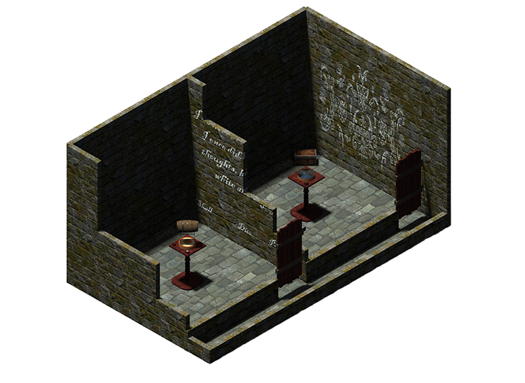
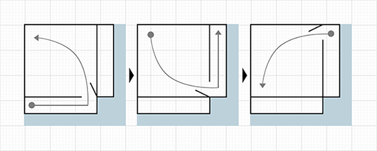

Master Thesis
UX Designer
Game Designer
3D Artist
September-December
2017
To explore the capabilities of VR and where it could go, we decided to create a short escape room experience. What made it different was that we would create some of the virtual assets in real life, so the user would be able to physically interact with it, while still experiencing the effects in VR.
As space was limited and we wanted to increase the amount of usability of the physical objects we decided to simply ad more space. Through self-overlapping architecture we could have the user walk around in a circle (or more like around a square) while thinking they were walking in a straight line, by having the user enter and exit through the same door, without them realising that the door was moved. This way we reused the same space twice to have two rooms in VR, though it required us to have the physical objects in the same space in both rooms.
Then it was just about creating puzzles (and implementing, and testing, and analysing, and writing, etc.). We created three puzzles: a riddle, a cipher wheel, and a puzzle using lights. The puzzles were all solved with a mixture of of a flashlight (VIVE controller) and a pedestal in the middle of both rooms room (first room a wheel the player could turn to decipher code, and in the second room a turnable wheel they could shine a light into and it would reflect on the wall). There was also a physical chest the user would open once all puzzles were completed — though it was a barrel in the first room, something non-interactable. The testing itself was with two conditions: one with physical objects, and one without.
My main roles in the project were those of designer (graphics and puzzles), and tester. As we used physical objects with virtual representation, all assets were made by us — both models and textures. Maya and zBrush was used for all the models, and textures were done in Substance Designer. As this was meant to be as close to a real life escape room as possible, there was no UI for the user to interact with, only what was in the world. Instead we had the environment show progress (both with visuals and audio) like lightbulbs indicating progress, or a door/chest opening up.
It was a lot of fun working with VR in conjunction with physical objects. The puzzles were good, but some more testing could have helped us with the issue of some participants struggling with solving them. There was no significant difference between having the physical objects there or not. It was, however, nice being able to lean on to the pedestal when going from crouching to standing, without smashing to the ground like with pure VR.